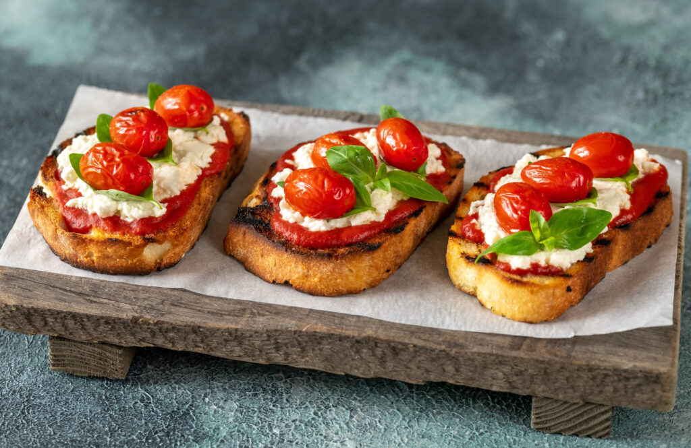
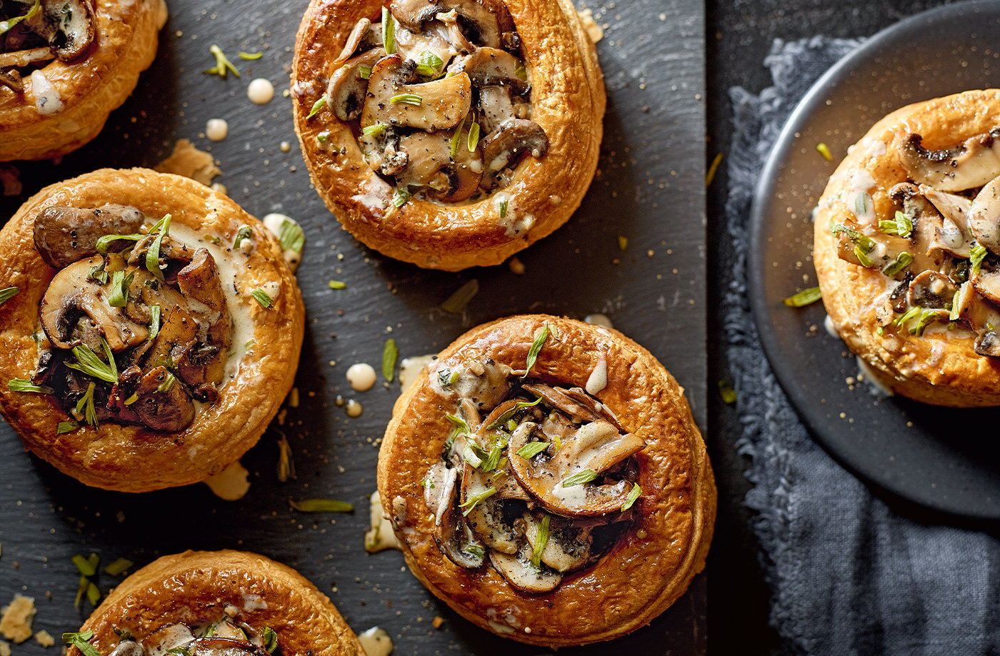

Bruschetta
Deliciosa torrada com tomates frescos, manjericão e azeite de oliva.
Délicieuse tartine aux tomates fraîches, basilic et huile d'olive.
R$ 20,00 / 5,00 €

Tapenade Provençal
Pasta de azeitonas pretas, alcaparras e anchovas servida com pão rústico.
Pâte d'olives noires, câpres et anchois servie avec du pain rustique.
R$ 25,00 / 6,00 €
Mini Quiches
Quiches de queijo e alho-poró em versão mini para petiscar.
Mini quiches au fromage et poireaux pour grignoter.
R$ 30,00 / 7,00 €
Vol-au-vent de Cogumelos
Folhados franceses recheados com creme de cogumelos.
Feuilletés français farcis à la crème de champignons.
R$ 35,00 / 8,50 €

Pão de Queijo Francês (Gougères)
Pequenos pães de queijo franceses, crocantes por fora e macios por dentro.
Petits pains au fromage français, croustillants à l'extérieur et moelleux à l'intérieur.
R$ 18,00 / 4,50 €